00 · Overview do canvas
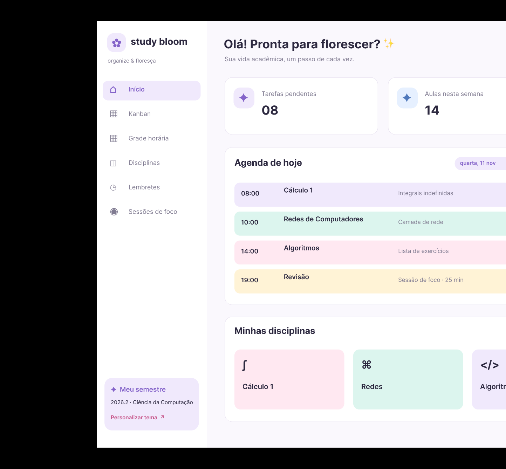
01 · Visão geral (Início)
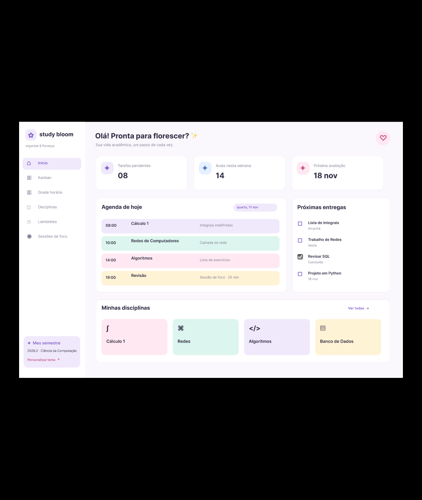
02 · Kanban de tarefas
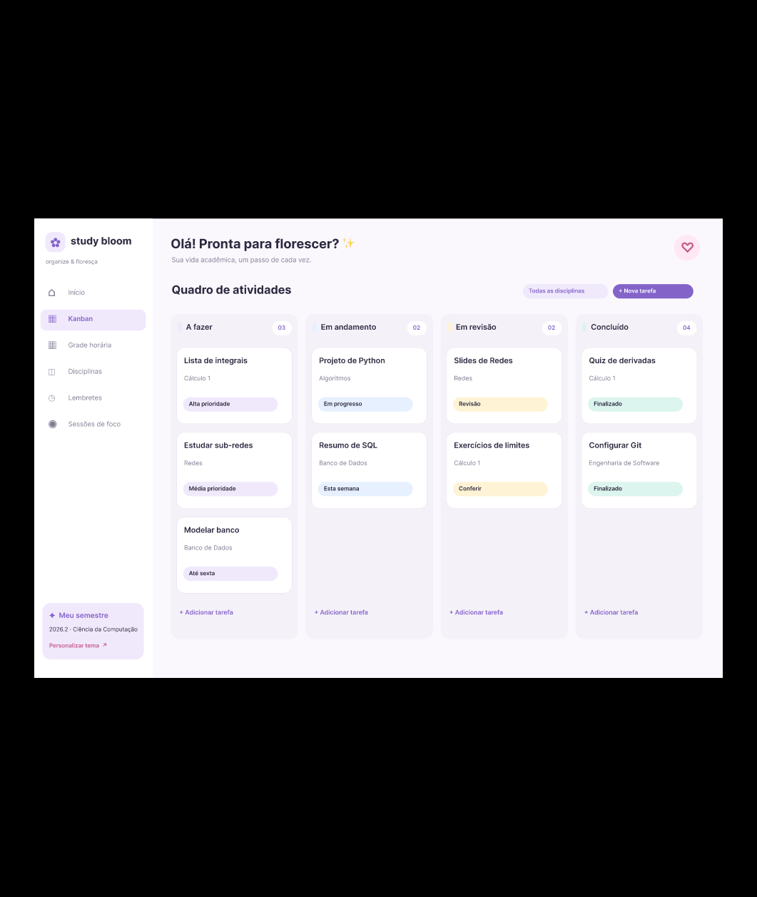
03 · Grade horária
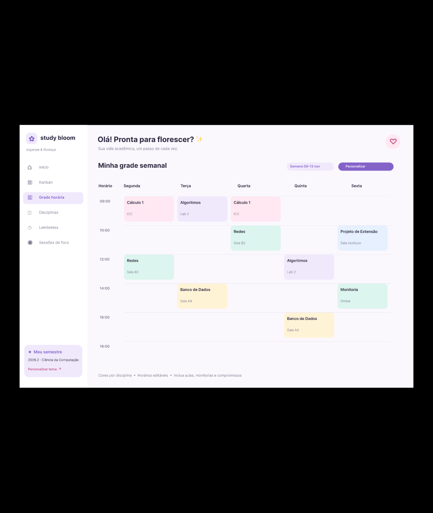
04 · Minhas disciplinas
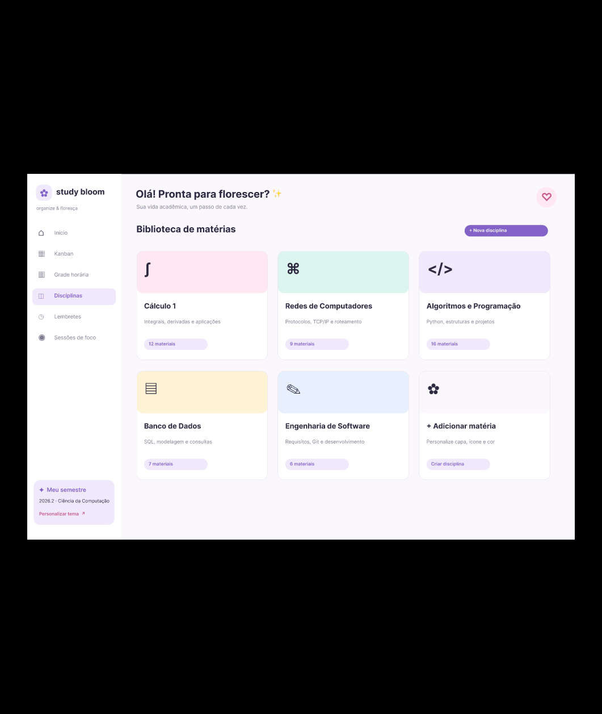
05 · Página de conteúdo
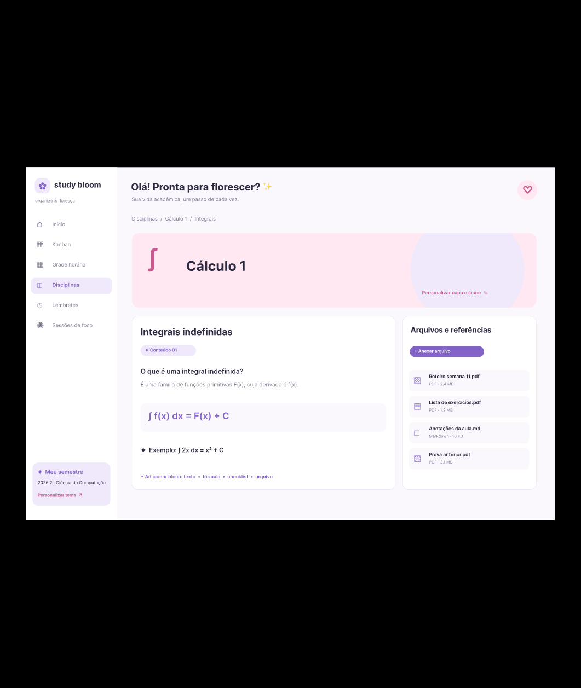
06 · Lembretes e foco
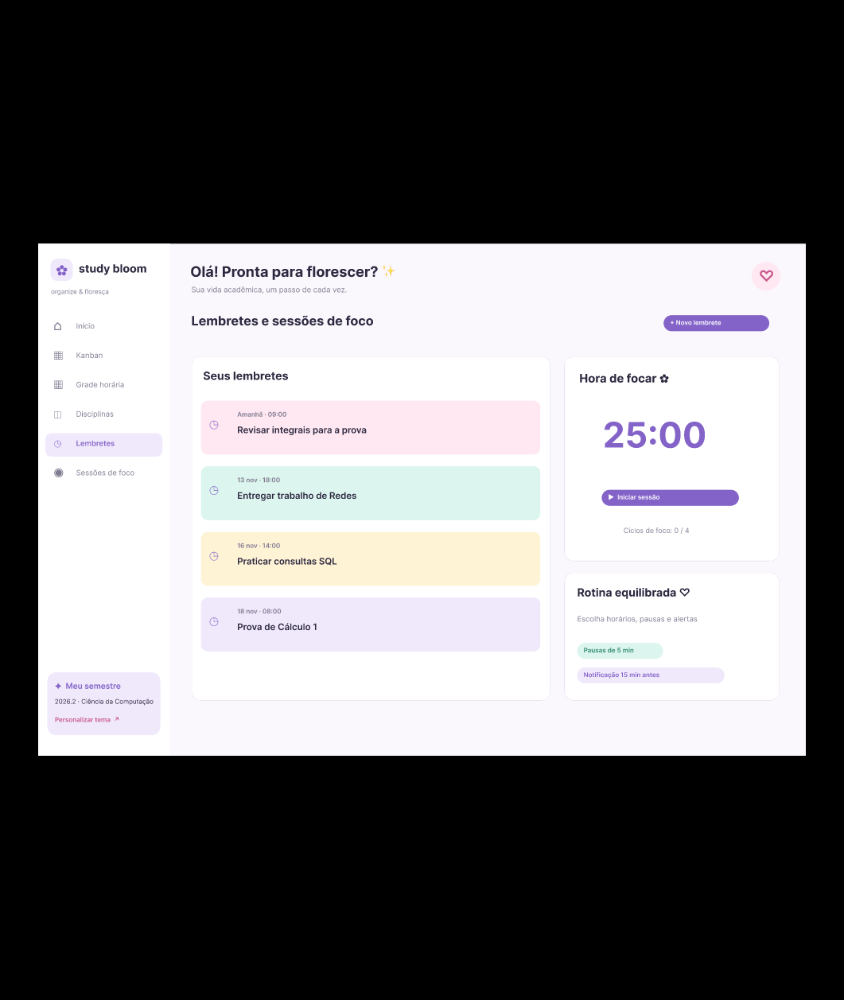
07 · Notas e frequência
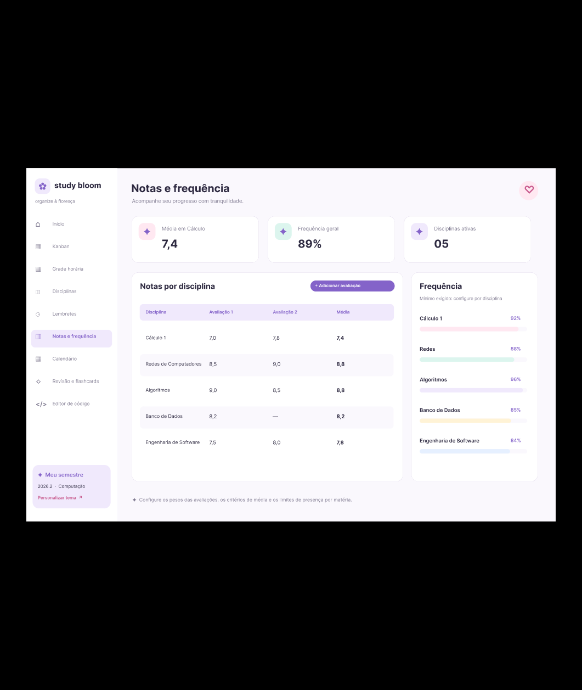
08 · Calendário acadêmico
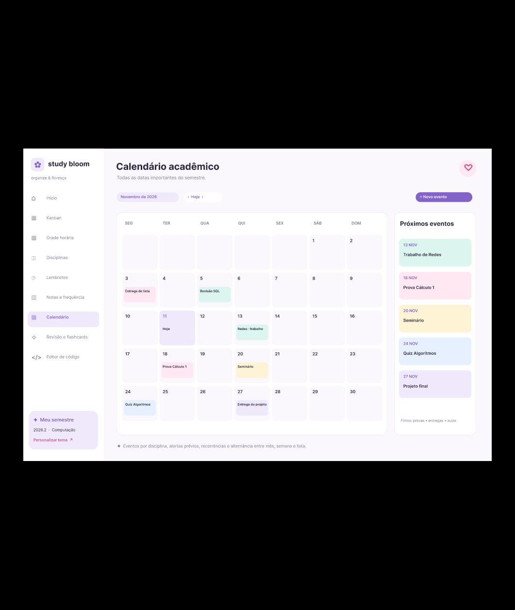
09 · Revisão e flashcards
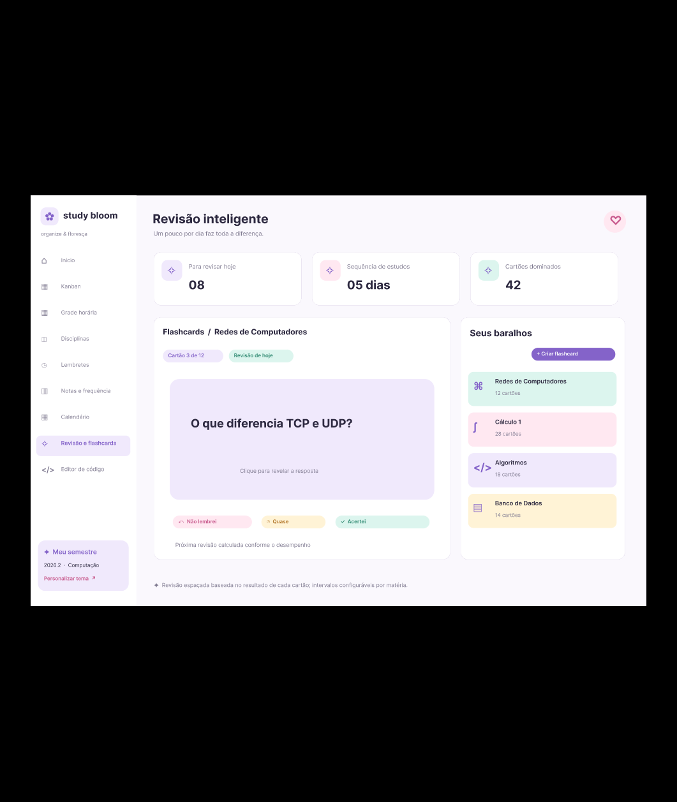
10 · Editor de código e LaTeX
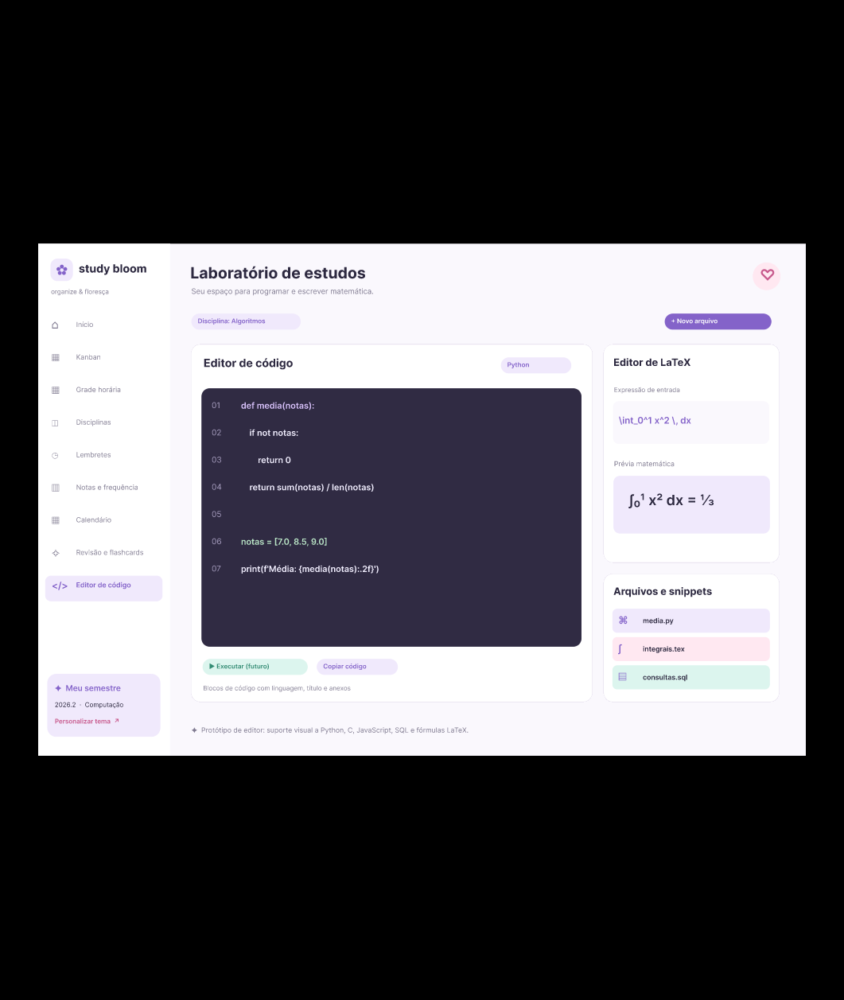